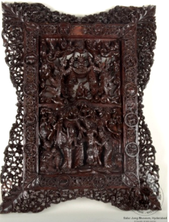

🔇 Is bhasha me is vastu ka audio abhi uplabdh nahi hai.
3. XV - 11: दीवार पट्टिका

3. XV - 11
आयताकार दीवार पट्टिका में दो अलग-अलग दृश्य दिखाए गए हैं। निचले भाग में लुम्बिनी वन में बुद्ध के जन्म का दृश्य उकेरा गया है और ऊपरी भाग में कुशीनगर में बुद्ध के अंतिम जीवन का दृश्य। पेड़ों को लकड़ी के पैनल पर बहुत सुंदर तरीके से मोड़ा गया है। किनारों पर बारह राशियों के चिन्ह गोल पैनलों में उकेरे गए हैं और उनके चारों ओर नक्काशीदार सीमाएँ हैं। बाईं ओर राशियाँ हैं - मीन, कुंभ, मकर, धनु; दाईं ओर राशियाँ हैं - मिथुन, कर्क, सिंह, कन्या; ऊपरी भाग में - मेष, वृष; और निचली पंक्ति में - वृश्चिक और तुला। सीमा पर बेल और पत्तियों का नक्काशीदार पैटर्न है। यह दीवार पट्टिका कलाकार की उत्कृष्ट कारीगरी को दर्शाती है। यह दीवार पट्टिका बर्मा की है और 19वीं सदी की है।
3. XV - 11: Wall Plaque
3. XV - 11
The rectangular wall plaque depicts two separate scenes. The lower part carries the scene of the Buddha's birth in the Lumbini grove, and the upper part the scene of the Buddha's final days at Kushinagar. The trees are turned very beautifully upon the wooden panel. Along the edges, the twelve zodiac signs are carved within circular panels surrounded by carved borders. On the left are Pisces, Aquarius, Capricorn and Sagittarius; on the right Gemini, Cancer, Leo and Virgo; in the upper part Aries and Taurus; and in the lower row Scorpio and Libra. The border carries a carved pattern of vines and leaves. This plaque reflects the artist's outstanding craftsmanship. The wall plaque is from Burma and dates to the 19th century.
3.XV - 11: గోడ పలక (WALL PLAQUE)
3.XV - 11
ఈ దీర్ఘచతురస్రాకారపు గోడ పలక 19వ శతాబ్దానికి చెందిన బర్మా కళాఖండం. ఇది రెండు విభిన్న దృశ్యాలను సూచిస్తుంది: కింది భాగంలో లుంబిని అడవిలో బుద్ధుడి జననం సంఘటన చెక్కబడింది, మరియు పై భాగంలో కుశీనగర్లో బుద్ధుడి చివరి జీవితం చెక్కబడింది. ఈ చెక్క పలకపై చెట్లు చాలా చక్కగా చెక్కబడ్డాయి. అల్లికలు (filigreed) ఉన్న అంచుతో పక్కల మొత్తం పన్నెండు రాశిచక్ర గుర్తులు గుండ్రటి పలకలలో చెక్కబడ్డాయి: ఎడమ వైపున మీనం, కుంభం, మకరం, ధనుస్సు; కుడి వైపున మిథునం, కర్కాటకం, సింహం, కన్య; పై భాగంలో మేషం, వృషభం; మరియు కింది వరుసలో వృశ్చికం, తుల ఉన్నాయి. అంచులపై లత మరియు ఆకుపచ్చని నమూనాలు చెక్కబడ్డాయి. ఈ గోడ పలక కళాకారుడి గొప్ప నైపుణ్యాన్ని ప్రదర్శిస్తుంది.
2. CS - II - 153:நாயுடன் இருக்கும் கியூபிட்(CUPID WITH DOG)
2. CS - II - 153
செவ்வகவடிவசுவர்கல்பலகைஇரண்டுவெவ்வேறுகாட்சிகளைக்குறிக்கிறது. புத்தர்லும்பினிகாட்டில்பிறந்தநிகழ்வுகீழ்பகுதியிலும்மற்றும்குஷிநகரில்புத்தரின்கடைசிவாழ்க்கைமேல்பகுதியிலும்செதுக்கப்பட்டுள்ளது. மரங்கள்,மரபலகையில்மிகவும்நேர்த்தியாகசெதுக்கப்பட்டுள்ளன. பலகையின் பக்கவாட்டுகளில் பன்னிரண்டு ஜோதிட ராசிகள் வட்டவடிவத்திற்குள்நுணுக்கமான வேலைப்பாட்டுடன் செதுக்கப்பட்டுள்ளன. இடப்பக்கத்தில் மீனம், கும்பம், மகரம், தனுசுராசிகளும்,வலப்பக்கத்தில்மிதுனம், கடகம், சிம்மம், கன்னிராசிகளும்,மேல் பகுதியில்மேஷம், ரிஷபம்ராசிகளும்கீழ் வரிசையில்விருச்சிகம், துலாம்ஆகிய ராசிகளும் செதுக்கப்பட்டுள்ளன. ஓரங்களில்கொடிமற்றும்இலைவடிவங்கள்செதுக்கப்பட்டுள்ளன. இந்தசுவர்பலகைகலைஞரின்சிறந்தபணித்திறனைக்காட்டுகிறது. இந்தகல்லால்ஆனசுவர்பலகைபர்மாவுக்குசொந்தமானது. இது 19 ஆம்நூற்றாண்டைச்சேர்ந்தது.
3. XV - 11: भिंतीवरील फलक
3. XV - 11
आयताकृती भिंतीवरील फलकावर दोन वेगवेगळी दृश्ये दाखवली आहेत. खालच्या भागात लुम्बिनी वनातील बुद्धाच्या जन्माचे दृश्य कोरले आहे आणि वरच्या भागात कुशीनगर येथील बुद्धाच्या अंतिम जीवनाचे दृश्य आहे. लाकडी पॅनेलवर झाडे अत्यंत सुंदर रीतीने वळवून कोरली आहेत. कडांवर बारा राशींची चिन्हे गोल पॅनेलमध्ये कोरली असून त्यांच्याभोवती कोरीव कडा आहेत. डावीकडे मीन, कुंभ, मकर, धनु या राशी आहेत; उजवीकडे मिथुन, कर्क, सिंह, कन्या; वरच्या भागात मेष, वृषभ; आणि खालच्या रांगेत वृश्चिक व तूळ. कडेवर वेल आणि पानांची कोरीव नक्षी आहे. हा फलक कलाकाराच्या उत्कृष्ट कारागिरीचे दर्शन घडवतो. हा भिंतीवरील फलक ब्रह्मदेशाचा असून १९व्या शतकातील आहे.
3.XV-11: മതിൽ ഫലകം
3.XV-11
ദീർഘചതുരാകൃതിയിലുള്ള ഭിത്തി ഫലകം രണ്ട് വ്യത്യസ്ത രംഗങ്ങളെ പ്രതിനിധീകരിക്കുന്നു. ലുംബിനി വനത്തിൽ ബുദ്ധൻറെ ജനനം താഴത്തെ ഭാഗത്ത് വളഞ്ഞതും കുഷിനഗറിലെ ബുദ്ധൻറെ അവസാന ജീവിതം മുകളിലെ ഭാഗത്ത് കൊത്തിവച്ചതുമാണ്. മരങ്ങൾ മരപ്പലകയിൽ വളരെ മനോഹരമായി വളഞ്ഞിരിക്കുന്നു. വശത്ത് വൃത്താകൃതിയിലുള്ള പാനലുകളിൽ കൊത്തിവച്ചിരിക്കുന്നപന്ത്രണ്ട്ജ്യോതിഷപരമായഅടയാളങ്ങൾ.അവയുടെ ക്രമം താഴെ പറയും വിധമാണ്:ഇടതുവശത്ത് -മീനം, കുംഭം, മകരം, ധനു., വലതുവശത്ത് -മിഥുനം, കർക്കടകം, ചിങ്ങം, കന്നി., മുകൾ ഭാഗത്ത്-മേടം, ഇടവം., താഴെയായി-വൃശ്ചികം,തുലാം.അതിരുകളിൽ വള്ളികളും ഇലകളും നിറഞ്ഞ മനോഹരമായ പാറ്റേണുകൾ കാണാം. കലാകാരന്റെ മികച്ച നൈപുണ്യം വിളിച്ചോതുന്ന ഈ മരശില്പംബർമ്മയിൽ (മ്യാന്മാർ) നിന്നുള്ളതാണ്. ഇത്പത്തൊൻപതാം നൂറ്റാണ്ടിലേതാണെന്ന്കരുതപ്പെടുന്നു.
3.XV - 11: ವಾಲ್ ಪ್ಲಾಕ್
3.XV - 11
ಆಯತಾಕಾರದ ಈ ಮರದ ಗೋಡೆಯ ಫಲಕವು ಎರಡು ವಿಭಿನ್ನ ದೃಶ್ಯಗಳನ್ನು ಪ್ರತಿನಿಧಿಸುತ್ತದೆ. ಲುಂಬಿನಿ ವನದಲ್ಲಿ ನಡೆದ ಬುದ್ಧನ ಜನನದ ದೃಶ್ಯವನ್ನು ಇದರ ಕೆಳಭಾಗದಲ್ಲಿ ಕೆತ್ತಲಾಗಿದ್ದರೆ, ಕುಶಿನಗರದಲ್ಲಿ ನಡೆದ ಬುದ್ಧನ ಕೊನೆಯ ದಿನಗಳ ದೃಶ್ಯವನ್ನು ಮೇಲ್ಭಾಗದಲ್ಲಿ ಕೆತ್ತಲಾಗಿದೆ. ಈ ಮರದ ಫಲಕದಲ್ಲಿ ಮರಗಳ ವಿನ್ಯಾಸವನ್ನು ಅತ್ಯಂತ ಸುಂದರವಾಗಿ ಮೂಡಿಸಲಾಗಿದೆ.ಇದರ ಅಂಚುಗಳಲ್ಲಿ ಜಾಲರಿಯಂತಹ ವಿನ್ಯಾಸವಿದ್ದು, ಬದಿಗಳಲ್ಲಿರುವ ವೃತ್ತಾಕಾರದ ಫಲಕಗಳಲ್ಲಿ ಹನ್ನೆರಡು ರಾಶಿಚಕ್ರಗಳನ್ನು ಕೆತ್ತಲಾಗಿದೆ. ಎಡಭಾಗದಲ್ಲಿ ಮೀನ, ಕುಂಭ, ಮಕರ ಮತ್ತು ಧನು ರಾಶಿಗಳನ್ನು; ಬಲಭಾಗದಲ್ಲಿ ಮಿಥುನ, ಕರ್ಕಾಟಕ, ಸಿಂಹ ಮತ್ತು ಕನ್ಯಾ ರಾಶಿಗಳನ್ನು ಚಿತ್ರಿಸಲಾಗಿದೆ. ಮೇಲ್ಭಾಗದಲ್ಲಿ ಮೇಷ ಮತ್ತು ವೃಷಭ ರಾಶಿಗಳಿದ್ದರೆ, ಕೆಳಗಿನ ಸಾಲಿನಲ್ಲಿ ವೃಶ್ಚಿಕ ಹಾಗೂ ತುಲಾ ರಾಶಿಗಳನ್ನು ಕಾಣಬಹುದು. ಇದರ ಜೊತೆಗೆ, ಅಂಚುಗಳ ಸುತ್ತಲೂ ಬಳ್ಳಿ ಮತ್ತು ಎಲೆಗಳ ಸುಂದರವಾದ ವಿನ್ಯಾಸವನ್ನು ಸಹ ಕೆತ್ತಲಾಗಿದೆ.ಬರ್ಮಾ ದೇಶಕ್ಕೆ ಸೇರಿದ, 19ನೇ ಶತಮಾನದಷ್ಟು ಹಳೆಯದಾದ ಈ ಗೋಡೆಯ ಫಲಕವು ಅಂದಿನ ಕಲಾವಿದನ ಅದ್ಭುತ ಕಲಾಚಾತುರ್ಯವನ್ನು ನಮ್ಮ ಕಣ್ಮುಂದೆ ತರುತ್ತದೆ.
3.XV-11: କାନ୍ଥ ଫଳକ
3.XV-11
ଆୟତାକାର କାନ୍ଥ ଫଳକରେ ଦୁଇଟି ସ୍ପଷ୍ଟ ଦୃଶ୍ୟକୁ ଦର୍ଶାଯାଇଛି। ତଳ ଅଂଶରେ ଲୁମ୍ବିନୀ ଜଙ୍ଗଲରେ ବୁଦ୍ଧଙ୍କ ବୁଦ୍ଧତ୍ୱ ପ୍ରାପ୍ତିର ଦୃଶ୍ୟ ଚିତ୍ରିତ ହୋଇଥିବା ବେଳେ,ଉପର ଅଂଶଟିରେ କୁଶିନଗରରେ ବୁଦ୍ଧଙ୍କ ଜୀବନର ଶେଷ ସମୟକୁ ଚିତ୍ରଣ କରାଯାଇଛି। ବୃକ୍ଷଗୁଡ଼ିକ କାଠ ପ୍ୟାନେଲରେ ଅତି ସୁନ୍ଦର ଭାବରେ ଖୋଦା ହୋଇଛି। ପାର୍ଶ୍ୱରେ ଗୋଲାକାର ପ୍ୟାନେଲରେ ବାରଟି ଜ୍ୟୋତିଷୀୟ ଚିହ୍ନ ଖୋଦିତ ହୋଇଛି, ଯାହାର ସୀମାରେଖାରେ ଜାଲିଦାର କାର୍ଯ୍ୟହୋଇଅଛି। ବାମ ପାର୍ଶ୍ୱରେ ରାଶି ଚିହ୍ନଗୁଡ଼ିକଖୋଦା ଯାଇଛି - ମୀନ, କୁମ୍ଭ, ମକର, ଧନୁ, ଡାହାଣ ପାର୍ଶ୍ୱରେ ଅଛି- ମିଥୁନ, କର୍କଟ, ସିଂହ, କନ୍ୟା, ଏବଂ ଉପର ପାର୍ଶ୍ୱରେ - ମେଷ, ବୃଷ, ଓ ତଳ ପାର୍ଶ୍ୱରେ- ବିଛା ଏବଂ ତୁଳା ଦେଖିବାକୁ ମିଳିଥାଏ। ଫଳକର ବାହ୍ୟପାର୍ଶ୍ୱରେ ଲତା ଏବଂ ପତ୍ର ଶୈଳୀ ଖୋଦିତ ହୋଇଥିବାର ଦେଖାଯାଏ। ଏହି କାନ୍ଥ ଫଳକ କଳାକାରଙ୍କ ନିପୁଣ କାରିଗରୀକୁ ପ୍ରଦର୍ଶନ କରିଥାଏ। ଏହି ଫଳକଟି ବର୍ମାରୁ19ଶ ଶତାବ୍ଦୀର ଆସିଅଛି।
3. XV - 11: দেওয়াল-ফলক
3. XV - 11
একটি আয়তাকার দেয়াল ফলক যেখানে দুটি ভিন্ন দৃশ্য প্রদর্শিত হয়েছে। নিচের অংশে লুম্বিনী অরণ্যে বুদ্ধের জন্মের ঘটনা খোদাই করা হয়েছে এবং উপরের অংশে কুশীনগরে বুদ্ধের শেষ জীবনের দৃশ্যটি খোদাই করা আছে। কাঠের প্যানেলে গাছগুলি অত্যন্ত নিপুণভাবে খোদাই করা হয়েছে। এর পার্শ্ববর্তী বৃত্তাকার প্যানেলে বারোটি রাশিচক্রের চিহ্ন সূক্ষ্ম অলঙ্কৃত ফিলিগ্রি বর্ডারসহ খোদাই করা আছে। বাম পাশে মীন, কুম্ভ, মকর এবং ধনু রাশি চিত্রিত হয়েছে; ডান পাশে রয়েছে মিথুন, কর্কট, সিংহ এবং কন্যা রাশি। উপরের অংশে মেষ ও বৃষ রাশি এবং নিচের সারিতে বৃশ্চিক ও তুলা রাশিকেদেখানো হয়েছে। বর্ডারের চারপাশ জুড়ে লতাপাতার নকশা খোদাই করা রয়েছে। এই দেয়াল ফলকটি শিল্পীর অসাধারণ কারুকার্যের পরিচয় দেয়। এই দেয়াল ফলকটি বার্মার এবং এটি ১৯ শতকের একটি নিদর্শন।
3۔ایکس وی-11: دیوار پر لگانے والا نقش یا تختی۔
3۔ایکس وی-11
مستطیل شکل کی دیواری تختی میں دو مختلف مناظر دکھائے گئے ہیں۔ نیچے کے حصے میں لمبنی جنگل میں بودھ کی پیدائش کا واقعہ کندہ کیا گیا ہے اور اوپر کے حصے میں کشی نگر میں بودھ کی آخری زندگی کا منظر دکھایا گیا ہے۔ لکڑی کے پینل میں درخت بہت خوبصورتی سے کندہ کیے گئے ہیں۔ دونوں طرف بارہ فلکیاتی نشانوں کو گول پینلز میں کندہ کیا گیا ہے جن کے کنارے نفیس نقش و نگار سے مزین ہیں۔ بائیں جانب زائچ کے نشان دکھا رہے ہیں: مچھلی، کُوؤر، مکر، قوس۔ دائیں جانب نشان ہیں: جوزا، سرطان، اسد، سنبلا۔ اوپر کے حصے میں ہیں: میش، ورشب۔ نیچے کی لائن میں ہیں: عقرب اور میزان۔ کناروں پر بیلوں اور پتوں کے نقش کندہ ہیں۔ یہ دیواری تختی فنکار کی عمدہ کاریگری کو ظاہر کرتی ہے۔ یہ دیواری تختی برما کی ہے اور یہ 19ویں صدی کی ہے۔
3. XV-11:દિવાલ પરની તકતી
3. XV-11
લંબચોરસ દીવાલ તકતી (wall plaque) બે અલગ-અલગ દ્રશ્યોનું પ્રતિનિધિત્વ કરે છે. નીચેના ભાગમાં લુમ્બિની વનમાં બુદ્ધના જન્મની ઘટના કોતરવામાં આવી છે, અને ઉપરના ભાગમાં કુશીનગરમાં બુદ્ધના અંતિમ જીવનની ઘટના કોતરેલી છે. લાકડાના પટ્ટામાં વૃક્ષો ખૂબ જ સુંદર રીતે કોતરવામાં આવ્યા છે. તેની બાજુઓ પર રાશિના બાર ચિહ્નો જાળીદાર કિનારી સાથે ગોળાકાર પટ્ટામાં કોતરવામાં આવેલા છે. ડાબી બાજુએ મીન, કુંભ, મકર, ધન રાશિના ચિહ્નો દર્શાવવામાં આવ્યા છે, જમણી બાજુએ મિથુન, કર્ક, સિંહ, કન્યા રાશિના ચિહ્નો છે. ઉપલા ભાગમાં મેષ, વૃષભ છે અને નીચેના ભાગમાં વૃશ્ચિક અને તુલા છે. કિનારીઓ પર વેલ અને પાંદડાવાળી ભાત કોતરવામાં આવી છે. આ દીવાલ તકતી કલાકારની મહાન કારીગરી દર્શાવે છે. આ દીવાલ તકતી બર્માની છે અને તે 19મી સદીની છે.